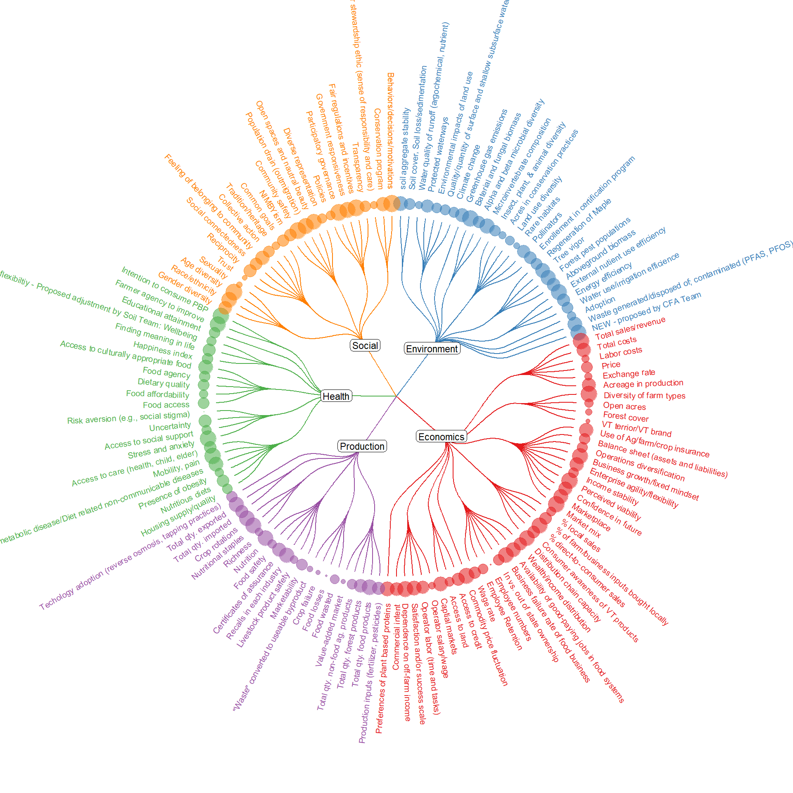

Code
## Load packages
pacman::p_load(
ggraph,
igraph,
dplyr,
RColorBrewer,
viridisLite
)
## Load data and add an origin level
dat <- readRDS('data/tree_dat.rds') %>%
dplyr::mutate(Framework = 'Sustainability') %>%
dplyr::select(Framework, Dimension:Indicator)
## Make edges
# include groupings by dimension, then combine them
edges <- list()
edges$sm_dim <- dat %>%
dplyr::select(Framework, Dimension) %>%
unique() %>%
dplyr::rename(from = Framework, to = Dimension) %>%
mutate(group = to)
edges$dim_ind <- dat %>%
dplyr::select(Dimension, Index) %>%
unique() %>%
dplyr::rename(from = Dimension, to = Index) %>%
mutate(group = from)
edges$ind_ind <- dat %>%
dplyr::select(Index, Indicator) %>%
unique() %>%
dplyr::rename(from = Index, to = Indicator) %>%
mutate(group = edges$dim_ind$from[match(.$from, edges$dim_ind$to)])
edges <- bind_rows(edges)
## Make vertices
# Each line is a single vertex (dimension, index, or indicator)
# We are just giving them random values to control point size for now
vertices = data.frame(
name = unique(c(as.character(edges$from), as.character(edges$to))) ,
value = runif(nrow(edges) + 1)
)
# Add the dimension groupings to the vertices as well
vertices$group = edges$group[match(vertices$name, edges$to)]
# Calculate the angles to arrange indicator labels
vertices$id = NA
myleaves = which(is.na(match(vertices$name, edges$from)))
nleaves = length(myleaves)
vertices$id[myleaves] = seq(1:nleaves)
vertices$angle = 90 - 360 * vertices$id / nleaves
# Calculate alignment of indicator labels
vertices$hjust <- ifelse(vertices$angle < -90, 1, 0)
# Flip label angles around 180 degrees if they are facing the wrong way
vertices$angle <- ifelse(vertices$angle < -90, vertices$angle + 180, vertices$angle)
## Create graph
# Make ggraph object from edges and vertices
graph <- graph_from_data_frame(edges, vertices = vertices)
# Plot the graph
ggraph(graph, layout = 'dendrogram', circular = TRUE) +
# Color edges by dimension
geom_edge_diagonal(aes(color = group), width = 0.5) +
# Create text for indicators using angles, hjust, and dimension groupings
geom_node_text(
aes(
x = x * 1.15,
y = y * 1.15,
filter = leaf,
label = name,
angle = angle,
hjust = hjust,
colour = group
),
size = 2.7,
alpha = 1
) +
# Make the points for indicators based on dimension groupings
geom_node_point(aes(
filter = leaf,
x = x * 1.07,
y = y * 1.07,
colour = group,
size = value,
alpha = 0.2
)) +
# Label the dimensions within the graph
geom_node_label(
aes(label = ifelse(name == group, name, NA)),
label.padding = unit(0.2, "lines"),
label.r = unit(0.3, "lines"),
label.size = 0.1,
size = 3
) +
# Various formatting options
scale_colour_manual(values = brewer.pal(5, 'Set1')) +
scale_edge_color_manual(values = brewer.pal(5, 'Set1')) +
scale_size_continuous(range = c(0.1, 7)) +
theme_void() +
theme(
legend.position = "none",
plot.margin = unit(c(0, 0, 0, 0), "cm")
) +
expand_limits(x = c(-2, 2), y = c(-2, 2))